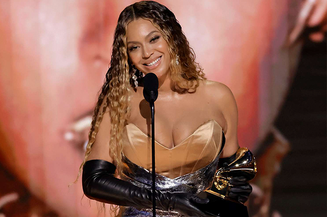
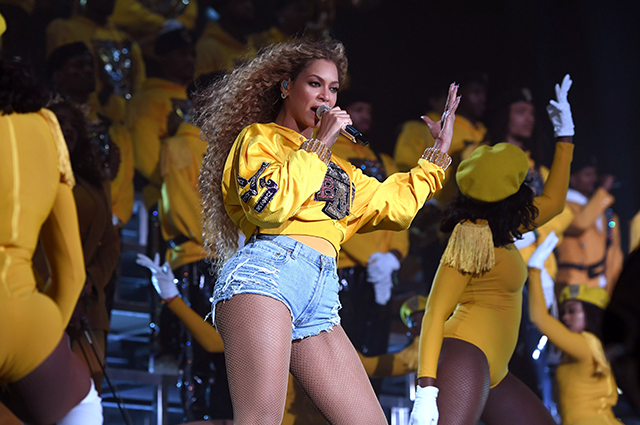

Com um recorde de 32 vitórias, Beyoncé se tornou a artista com mais grammys premiados, ao total a 'Queen Bey' acumula 88 indicações. O prêmio que a colocou no topo foi o de Melhor Álbum Dance/Eletrônico, com o disco “Renaissance”, lançado em 2022.
No início de agosto, segundo informações do “Touring Data”, site especializado em relatórios de shows, a cantora fez faturou U$ 16,5 milhões em uma noite. Cerca de R$ 80 milhões, na cotação atual. Além disso, Beyoncé também ultrapassou US$ 1,3 bilhão, aproximadamente R$ 6,3 bilhões, com a venda de 1,2 milhão de ingressos em todas as suas turnês e se tornou a artista negra com a maior bilheteria da história.
Após cancelar sua apresentação no “Coachella” em 2017 por conta da gravidez dos gêmeos, Rumi e Sir, um ano mais tarde, em 2018, a cantora cravou o nome no festival realizado em Indio, na Califórnia, tornando-se a primeira artista negra como atração principal do evento.
Por quase duas horas, Beyoncé fez uma apresentação memorável e repleta de surpresas, com aparições do marido, Jay-Z, e de sua irmã, Solange Knowles, além das diversas homenagens e citações. As emoções, por trás do célebre show, foram transformadas no documentário “Homecoming” – disponível na Netflix – que ganhou o Grammy na categoria de Melhor Filme Musical, em 2020.
